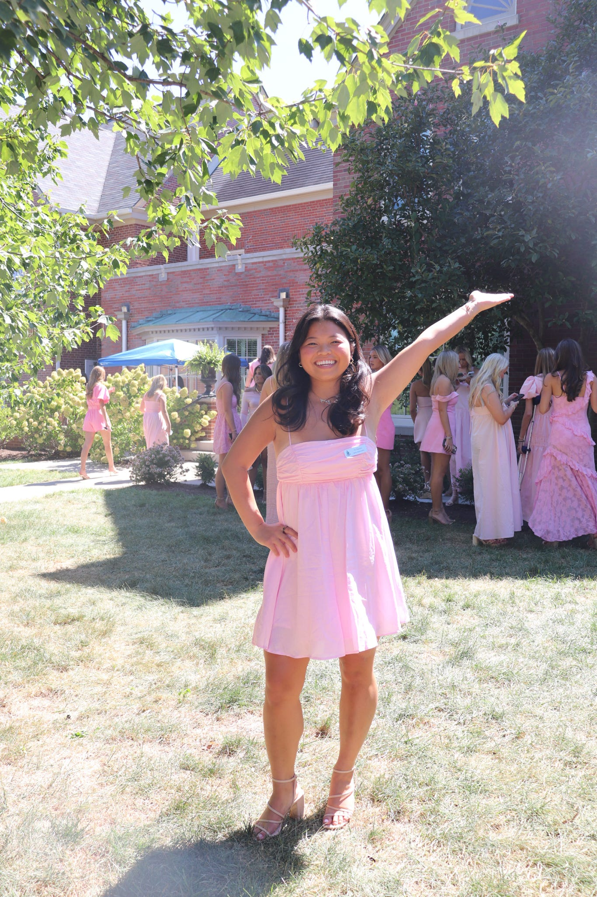

Background

My name is Vy Nguyen, and I am a senior studying Information Communication Technology. I am interested in how technology, communication, and structure work together to create clear and useful digital systems.
This website is part of my learning process. Instead of focusing on design right away, I am concentrating on writing meaningful content and organizing it using semantic HTML elements.
My Projects
The Projects page highlights academic and personal work I’ve completed. Each project includes short explanations about the goal, what I built, and what I learned.
I want visitors to understand not just the final result, but the thinking process behind each project. Clear explanations are just as important as technical skills.